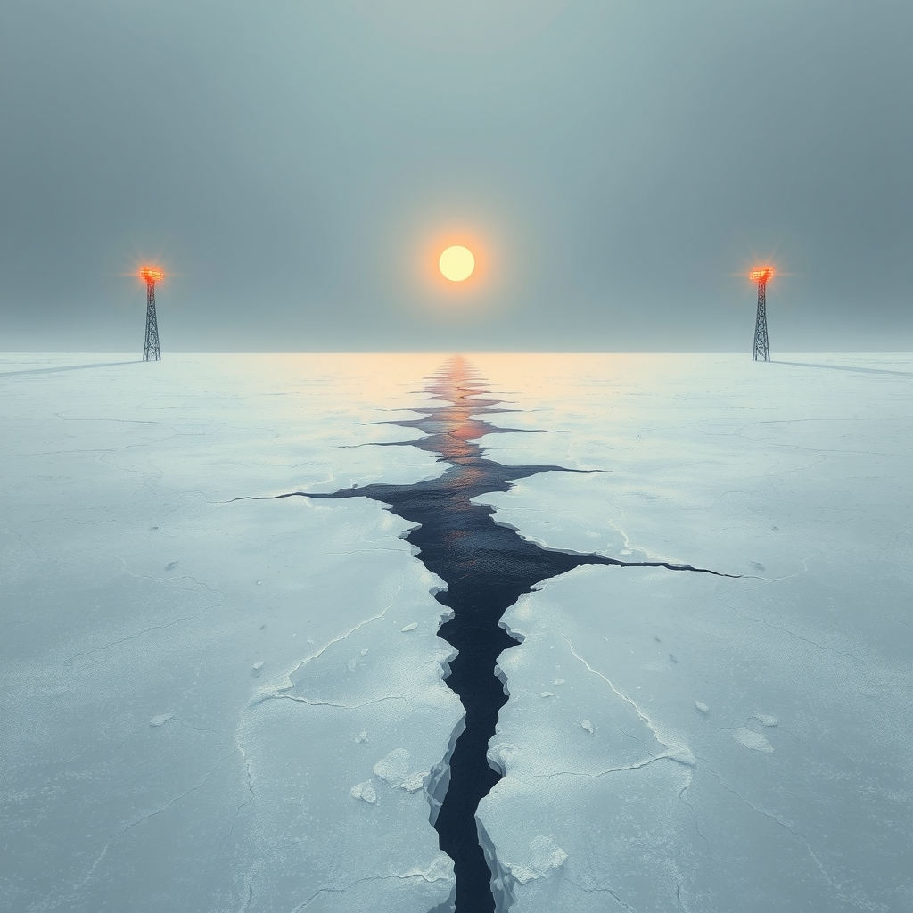
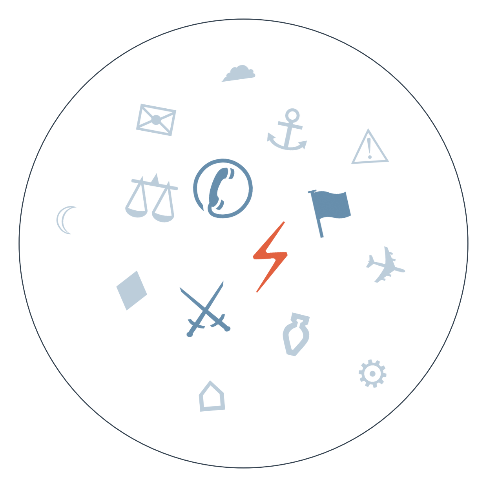

Ранковий бріф · огляд світової преси

Отже, Сі Цзіньпін таки їде у Вашингтон — Пекін офіційно підтвердив держвізит на 24 вересня для перемовин з Трампом. Це перша зустріч такого рівня за роки протистояння, і від неї залежить, чи продовжать торгове перемир'я (угоду в Пусані) та чи домовляться про діалог з безпеки штучного інтелекту.
Зеленський тим часом уже в Нью-Йорку: перед зустріччю з Трампом він встиг переговорити з Макроном і навіть перетнутися з директором ЦРУ Ретcліффом в ірландському аеропорту дорогою. Формат головної зустрічі досі не розкрито, але саме від неї залежить, чи отримає Україна нові ракети для Patriot, про які цього тижня проситимуть Трампа й європейські лідери.
Найбільший за час війни удар по Москві завершився зупинкою Московського НПЗ "Газпромнефті" — найпомітніший наслідок неділі. За оцінкою Генштабу ЗСУ, загальна нафтопереробна потужність Росії впала на 45%, що прямо суперечить заявам Трампа про нібито досягнуту домовленість не бити по енергооб'єктах.
Данія, Гренландія і США сьогодні підписують угоду про безпеку острова, підбиваючи підсумок сюжету, який розвивався останні дні, — це перше офіційне закріплення того, що Арктику тепер прикриває НАТО, а не лише двосторонні домовленості. Вашингтон отримує дві нові військові бази, Копенгаген зберігає формальний суверенітет, а остаточний статус острова лишається відкритим питанням.
Білий дім за добу пройшов шлях від бану CNN, MSNBC і Politico до запуску власного стрімінгу "Trump TV" на YouTube, а великі мережі у відповідь призупинили пул-висвітлення президента. Три забанені видання вже подали позов за Першою поправкою — перша спроба великих медіа юридично оскаржити персональний бан адміністрації.

Ескалація хуситів проти Саудівської Аравії й Ормузької протоки (це радше спільна тривога під різними кутами, ніж справжній розкол позицій — усі джерела погоджуються в оцінці загрози)
Замовчують: голос самих хуситів як сторони конфлікту в жодному з цих матеріалів не звучить — вони фігурують лише як об'єкт засудження; майже ніхто не згадує роль Ірану в постачанні.
Чому різняться акценти (а не позиції): Брюссель дивиться на конфлікт крізь призму торгових маршрутів і власної вразливості; Париж — крізь союзницькі зобов'язання й енергетичну залежність від стабільності Затоки; ООН формально відповідає мандатом захисту цивільних і статистикою переміщених; G7 демонструє єдність без реальних дій, бо жодна країна-член не готова брати на себе відповідальність за ескалацію.
Держвізит Сі Цзіньпіна до Вашингтона
china-watch (Trivium): вузька технічна рамка — головна новина не саміт як такий, а те, що США пропонують Китаю діалог з безпеки ІІ.
Замовчують: власне китайська внутрішня преса (Caixin) у цьому кластері саміт майже не обговорює, зосереджуючись на IPO Boston Dynamics і споживчому кредитуванні; офіційної пекінської рамки очікувань від зустрічі в дайджесті немає.
Чому розходяться: гонконгська преса пов'язана з бізнес-інтересами, яким загрожує зрив угоди, тому підкреслює ризик; німецька ділова преса дивиться на власні ринки й раціоналізує оптимізм; DW пише з позиції спостерігача, для якого головний сюжет — місце Європи в чужій грі; china-watch фокусується на вузькому вимірі ІІ-безпеки як індикаторі загального клімату переговорів.
кінець серпня Хусити атакували Саудівську Аравію, США попередили про ризик швидкої ескалації → середина вересня нафтопровід Схід-Захід частково зупинено, ціни на дизель ростуть → 21-22.09 нові удари по танкерах в Ормузькій протоці й авіаудари по Мокха, Британія погоджується заправляти саудівські винищувачі → веде до: якщо трубопровід не відновиться повністю до кінця вересня, участь Заходу переходить з логістичної підтримки до фактичної залученості в конфлікт.
початок вересня Франція блокує зняття Усманова із санкційного списку ЄС → 21.09 ЄС не встигає узгодити продовження всього пакета до дедлайну → 22.09 голосування знову провалюється, до Франції приєднується Латвія, Каллас закликає не послаблювати тиск → веде до: розрив між рішучістю Вашингтона (закон Грема вже підписаний) і буксуванням Брюсселя стає видимим фоном напередодні зустрічі Зеленського з Трампом.
два тижні тому Історичний провал CDU на виборах у Мекленбурзі-Передній Померанії й Берліні, Мерц називає результат "катастрофою" → сьогодні голова CDU в цій землі йде у відставку → веде до: питання про здатність канцлера проводити реформи загострюється, а найближчі місяці стануть перевіркою, чи втримає Мерц коаліцію без нових електоральних поразок.
Аналітики Energy Aspects попереджають, що збої в танкерних перевезеннях через ірансько-американську війну можуть тривати до кінця року, тримаючи ціни на дизель високими.
Volkswagen прискорює реструктуризацію і скорочує ще 50 тисяч робочих місць у Німеччині.
Регулятори США дали остаточний дозвіл на злиття Paramount і Warner Bros. Discovery.
Нацбанк Польщі продовжує нарощувати золотий резерв — майже 648 тонн металу.
Смерть 27-річного сина Сінді Кроуфорд Преслі Гербера якісна преса подає стримано — як факт передозування в реабілітаційному центрі; таблоїд Daily Mail тим часом розганяє історію до "приреченої саморуйнівної спіралі" й сімейних секретів. Bild і Blick повністю ігнорують держвізит Сі Цзіньпіна та ескалацію в Ормузі заради жовтневого свята пива, гороскопів і футбольних пліток. А запуск "Trump TV" Daily Mail подає як екстраординарний крок ухилення від преси, тоді як ділові видання зосереджені на юридичному вимірі позову мереж.
Зустріч Зеленського з Трампом у Нью-Йорку цього тижня (див. ГОЛОВНЕ) визначить, чи отримає Київ нові ракети для Patriot.
Атака на Москву і зупинка Московського НПЗ (див. ГОЛОВНЕ) ставлять під сумнів заявлену Трампом домовленість про непошкодження енергооб'єктів — саме це стане темою на зустрічі з Трампом.
Угорщина відмовляється дозволити будівництво нафтосховищ для України на своїй території, а ЄС вкотре не зміг узгодити продовження санкцій (див. ЩО З ЧОГО ВИПЛИВАЄ) — обидва факти звужують коридор підтримки саме тоді, коли Київ найбільше потребує єдності партнерів.
Надзвичайний стан в енергетиці Молдови, оголошений Санду напередодні зими, практично не потрапив у міжнародну пресу поза молдовськими джерелами — тема витіснена саммітом Сі-Трамп і Гренландією, хоча йдеться про реальний ризик дефіциту газу й електрики в країні біля кордону ЄС.
Перші британські звинувачення у справі геноциду в Руанді 1994 року (BBC) лишилися майже непоміченими за межами Британії — тема вимагає юридично-історичного пояснення, а не швидкої новини, і програє конкуренцію за увагу тижню ООН.
Позов канадської провінції Британська Колумбія проти OpenAI через роль ChatGPT у шкільному розстрілі висвітлили лише кілька видань (Financial Times, Al Jazeera, нідерландська NOS) — велика частина техно-орієнтованої преси оминула тему, ймовірно, через її незручність для індустрії штучного інтелекту та потребу в ресурсомісткому юридичному аналізі.
Погроза США заборонити з середи польоти іранських авіакомпаній може бути провісником нового пакета тиску на Тегеран напередодні переговорів щодо Ормузу. На чому ґрунтується: одне джерело (Digi24, Румунія).
Ірак обіцяє 30 вересня оголосити поетапний план роззброєння угруповань, перший етап — 90-денне перемир'я; це може стати першим реальним кроком стримування проіранських формувань. На чому ґрунтується: заява прем'єра, поширена переважно державними/наближеними до Росії каналами (BelTA, Kommersant, Klix) — незалежного підтвердження поки немає.
Позов CNN, MSNBC і Politico та колективне призупинення пул-висвітлення президента великими мережами (див. ГОЛОВНЕ) можуть започаткувати довгострокову зміну формату висвітлення Білого дому. На чому ґрунтується: широкий кластер джерел, збіжна рамка подачі.
Попередній прогноз щодо голосування ЄС по санкціях не справдився: блокування знято не було — до Франції, яка тримала вето, приєдналася Латвія, і санкційний список так і не ухвалили.
Наші:
Енергоперемир'я Росія-Україна буде порушене принаймні однією стороною до 29 вересня
США оголосять нові санкції проти структур, пов'язаних із постачанням хуситам, до 29 вересня
Перенесена зустріч Ірану з країнами Затоки щодо Ормузу не відбудеться до 29 вересня
Нафтопровід Схід-Захід у Саудівській Аравії відновиться повністю до 30 вересня
Кажуть інші:
Energy Aspects: збої в перевезенні нафти через ірансько-американську війну можуть тривати до кінця 2026 року (див. ГРОШІ).
Засновник Branch Global (за Caixin): дохідність американських державних облігацій на рівні 5% може стати "новою нормою".
Цього тижня — очікується зустріч Зеленського з Трампом на полях Генасамблеї ООН.
Базова лінія у прогнозах. Відсоток «базово» — це ймовірність події за інерцією, якщо ніхто нічого не робитиме й нічого не зміниться. Друге число — наша впевненість. Прогноз має сенс лише тоді, коли ці числа розходяться: збіг означає, що ми просто описали поточний стан.
Відсотки в карті уваги. Частка країни в денному обсязі зібраних матеріалів. Не показник важливості події, а показник того, скільки місця країна зайняла в новинному потоці за добу. Різкий стрибок частки зазвичай означає, що в країні щось відбувається.
Стрічки, які не відповіли. Не відповіли: Fakt, TVN24, Al Arabiya, Corriere della Sera, Il Foglio, El Universal, Milenio.